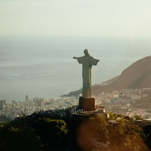
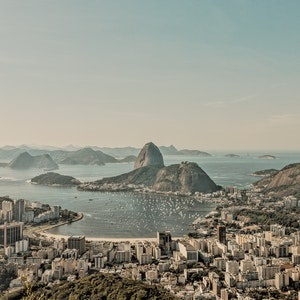
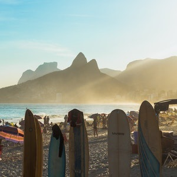
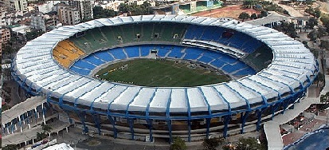

Cristo Redentor - Corcovado

Quando pensamos no Rio de Janeiro logo vem à nossa cabeça a imagem do
Cristo Redentor, estou certo? Eleito uma das Sete Maravilhas do Mundo
Moderno, sem dúvida ele é o principal cartão postal carioca. A estátua
de 30m de altura fica no alto do morro do Corcovado
(Floresta da Tijuca), a 700 metros de altitude e com uma
vista de tirar o fôlego. Lá de baixo ele é visto quase da cidade toda,
compondo a paisagem. O rosto da estátua foi criado pelo escultor
Gheorghe Leonida, que nasceu na Romênia em 1893. O melhor jeito de
chegar ao topo é utilizando o Trem do Corcovado. Lá de cima,
impossível ter vistas mais incríveis da cidade – Pão de Açúcar,
Maracanã, Baía da Guanabara e por aí vai. De preferência, tente ir
num dia claro e ensolarado para ter as melhores vistas. E para evitar
as multidões – tarefa quase impossível no loca, diga-se – prefira os
dias de semana logo cedo. Um ponto turístico imperdível
Pão de açucar

O Bondinho do Pão de Açúcar foi o primeiro teleférico do Brasil,
inaugurado em 1912. Para chegar ao local, que fica a 396 metros do
nível do mar, é necessário pegar um primeiro bonde na Praia Vermelha ,
que segue até o morro da Urca. De lá, outro bondinho vai até o destino
final. A atração é uma das mais populares do Rio de Janeiro e oferece
várias paisagens deslumbrantes.
Arpoador e Pedra da Gávea

Localizados em Ipanema, a Pedra e a Praia do Arpoador são um dos
pontos turísticos mais visitados no Rio de Janeiro. Sua praia, com
apenas 500 metros de extensão, é frequentada principalmente por
surfistas por causa das ondas constantes. Ao subir a Pedra da Gávea
temos uma ótima vista das Praias de Ipanema e do Leblon , e ainda do
Morro dos Irmãos. Além disso, o Arpoador é um dos melhores lugares
para se curtir o pôr-do-sol no Rio de Janeiro.
Maracanã

Estádio Jornalista Mário Filho, mais conhecido como Maracanã, ou carinhosamente como Maraca, é um estádio de futebol localizado na Zona Norte da cidade brasileira do Rio de Janeiro. Foi inaugurado em 1950, inicialmente com o nome de Estádio Municipal, durante o mandato do então general de divisão e prefeito do Distrito Federal do Rio de Janeiro Ângelo Mendes de Moraes, tendo sido utilizado na Copa do Mundo de Futebol daquele ano. Quando da sua inauguração, a capacidade oficial de 155 mil lugares fez o Maracanã superar o Hampden Park, de Glasgow, e se tornar o maior estádio do mundo na época.
Desde então, o Maracanã foi palco de grandes momentos do futebol brasileiro e mundial, como o milésimo gol de Pelé, finais do Campeonato Brasileiro, Campeonato Carioca, Copa Libertadores da América, da primeira Copa do Mundo de Clubes da FIFA e da Copa América de 2021, além de competições internacionais e partidas da Seleção Brasileira.